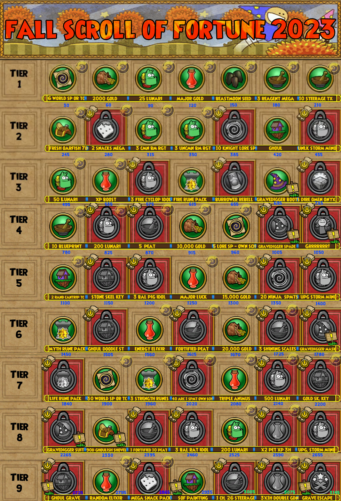

#
Fall 2023 Scroll Of Fortune (Ghoul)
#
Introduction
This item is not released yet. Please be mindful when discussing publicly.
This page is intended to document everything we know of the upcoming Fall SOF 2023. Like the Summer 2023 SOF, a lot of it was added one day before the event launched!
2023 Spells Theme - (as seen in Summer 2023's Minotaur SOF ) - this one is Ghoul themed.

#
SOF - Fall 2023
Things you should know:
- The reload/refresh icon indicates that this is exactly the same as the last Scroll.
- Wooden signpost indicates that the item is new.
Last scroll was the Summer 2023 Scroll of Fortune - It can be found here.
This page will split the information we know about the upcoming Scroll of Fortune into two sections -
- An overview of the Scroll (as you can partly see below)
- A deeper look into some of the items from this scroll below that.
Stats: 9/63 New Items, 36/63 Items same as last SOF.

#
Scroll Items
This section will feature some of the new items found in this scroll, please navigate the tabs for information on various items. You can see an overview of some new items in a graphic below!
#
Mount - Ghoulish Shovel
Spooky, but also quite a familiar mount!
Root - Mount file: Root/ObjectData/Mounts/MNT_GhoulsShovel-001.xml
#
Mount - Sources / Timeline
Thursday, August 31st 2023 / V_r740730.Wizard_1_520: The "Ghoulish Shovel" is added to the files with today's patch to live realm.
Wednesday, May 31st 2023 / V_r736675.Wizard_1_510: The mount appears in the equipment icons with today's live patch.
#
Emote - Grrrrrrr! (Paid SOF @ 1050 Points)
Spooky. Fun fact, this emote was known as "Boo!", before it was renamed to Grrrrrrr!.
Root - Emote File: ./ObjectData/Emotes/Emote66_FallSoF2023.xml
Shared - Animations: _Shared/Character/Players/Animations/P_B_Emote_Scare.kf
#
Emote - Sources / Timeline
Thursday, August 31st 2023 / V_r740730.Wizard_1_520: This emote is renamed to "Grrrrrrr!"... and, uh, that's it.
Monday, July 17th 2023 / V_r738647.WizardDev:** Sound effects for the Boo! emote are added to the files
Monday, July 10th 2023 / V_r738289.WizardDev: This emote Boo! is added to the files with today's initial patch to the `Summer 2023 Test Realm.`` It's missing the sound for now.
#
TP Effect - "Grave Escape!" (Paid SOF @ 3145)
Nice getaway for those deadly situations.... I'll see myself out.
#
TP Effect - Sources / Timeline
Thursday, August 31st 2023 / V_r740730.Wizard_1_520: This teleport effect is added to the files with today's patch to live realm... Just one day away from release!
#
"Gravedigger" Gearset
#
695, 1005, 1780, 2200
No way, another Spell cosplay! Almost like they're doing it intentionally! Last time it was the Minotaur.
Root: (Hat example) ObjectData/Blanks/SP-Blank-Hat-58.xml
Equipment: Equipment/Character/PlayerParts/SP/P_B_SP_Ghoul_Hood.nif
#
Gear - Sources / Timeline
Thursday, August 31st 2023 / V_r740730.Wizard_1_520: This gear is added to the files with today's patch to live realm. Note that prior, we only had the gear model. just one day away from release!
Monday, July 10th 2023 / V_r738289.WizardDev: The rather bugged model of this gear is added to the files with the initial patch to the Summer 2023 Test Realm.
#
Sources / Timeline
-
Friday, September 1st 2023: The Fall 2023 Scroll Of Fortune is released today, literally a day after most of it was added in! Therefore, this page is considered archived.
-
Thursday, August 31st 2023 / V_r736675.Wizard_1_510: A very busy day for the Fall 2023 Scroll of Fortune in today's live patch. As expected, the scroll itself is added to the files. Along with the mount, gear, and teleport effect. All one day before the scroll is out!
Mount - The Ghoulish Shovel mount is completely added to the files with today's patch to live realm.
Gear - The Ghoul Outfit 'Gravediggers' is added to the files with today's patch to live realm.
Teleport Effect - The "Grave Escape" teleport effect is added to the files with today's patch to live realm. -
Monday, July 17th 2023 / V_r738647.WizardDev: Sound for the
Boo!emote is added to the files -
Monday, July 10th 2023 / V_r738289.WizardDev: A few tidbits from the
Fall 2023 Scroll of Fortunewith the advent of the Summer 2023 TR.
Gear model: The currently bugged Ghoul gear is added to the files - as a model only for now.
Emote - The "Boo!" emote (later renamed) emote is added to the files with the first patch of Test Realm.
Housing - The "Ghoul's Grave" is added to the files with the initial test realm patch!
-
Wednesday, May 31st 2023 / V_r736675.Wizard_1_510: A lot of the upcoming Fall 2023 SOF appears in the equipment icons with today's live patch.